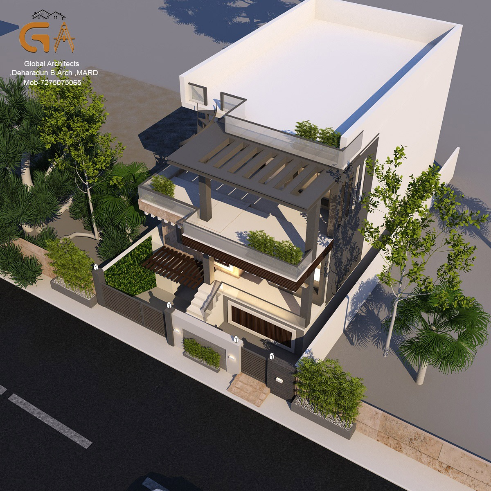
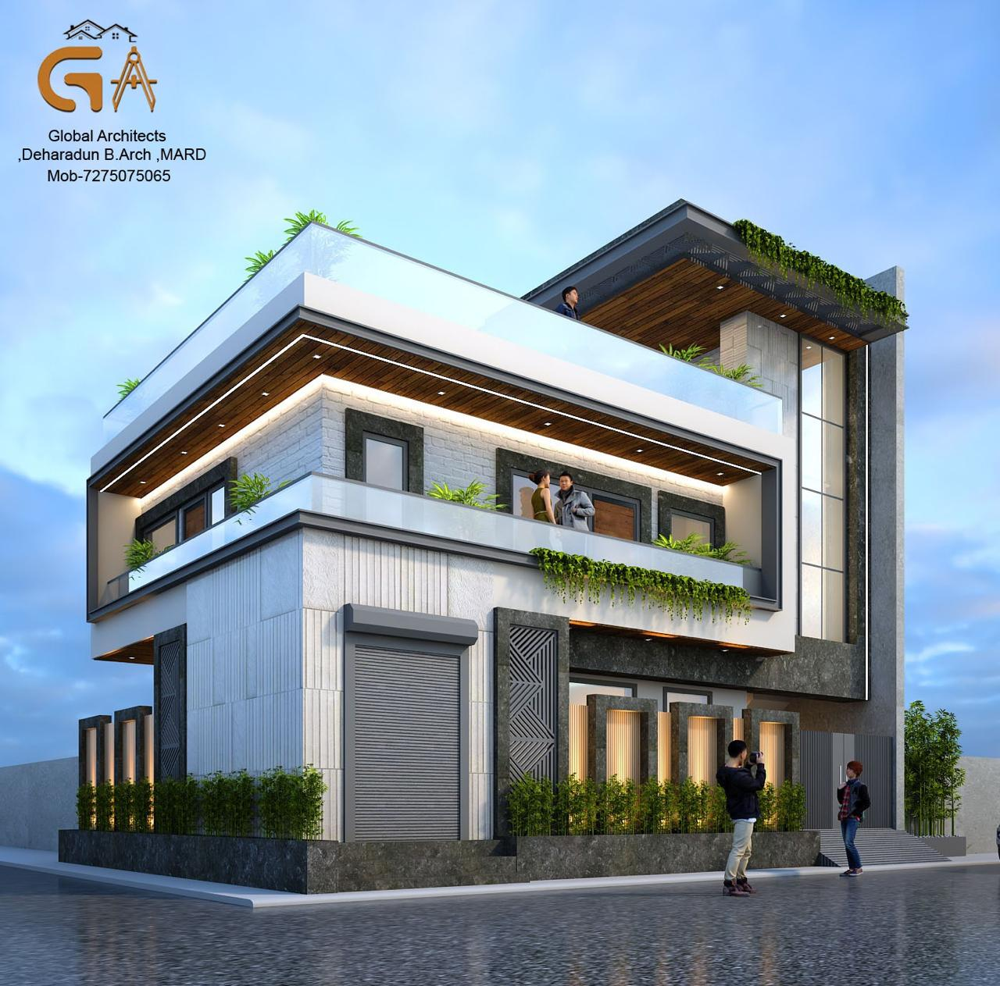
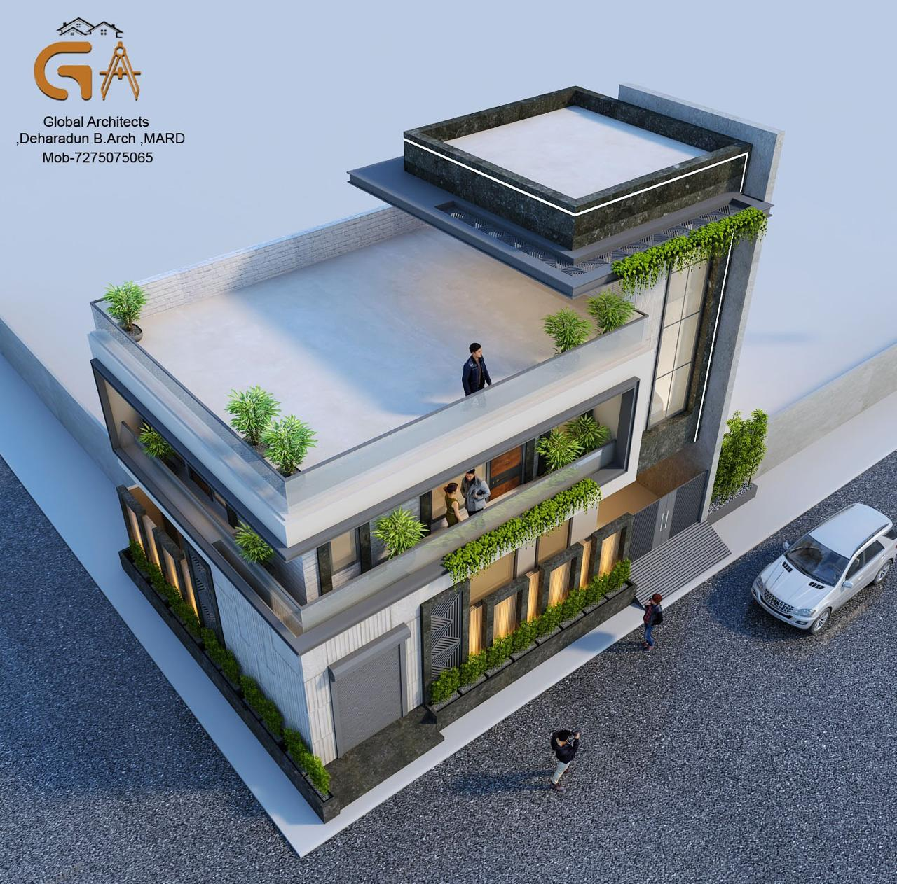

Dehradun is building fast. Drive down Rajpur Road, GMS Road, or Sahastradhara today and you will see it — flat roofs, glass facades, stone cladding, double-height volumes. The city's residential architecture has shifted decisively toward contemporary design in the last five years, and that shift is accelerating. But modern house design in Dehradun is not the same as modern house design anywhere else. The terrain slopes. The seismic zone demands structural discipline. The rainfall is heavy. The light is different from plains cities. What works on paper in Delhi does not always work on a hillside plot in Rajpur. This guide covers what modern residential architecture actually looks like in Dehradun in 2026 — the styles that work, the materials that hold up, and the decisions that separate a house that ages well from one that doesn't.
What "Modern" Actually Means in Dehradun's Context
Modern architecture is not a single style — it is a set of principles. Clean geometry. Honest materials. Spaces designed for how people actually live, not for how a house is supposed to look. In Dehradun, these principles get filtered through specific local conditions that change what modern design looks like in practice. A modern home in Dehradun typically combines: flat or low-pitched roofs with proper waterproofing for heavy monsoon rainfall, large windows oriented to capture Himalayan views and morning light, stone or textured concrete cladding that weathers well in Dehradun's humid climate, open plan living areas that connect to outdoor terraces or gardens, and structural systems designed for Seismic Zone IV compliance. That last point is non-negotiable. Dehradun lies in Seismic Zone IV — every modern home here must be structurally engineered for earthquake resistance. Good architecture and good engineering are not separate things in this city.
Popular Modern House Styles in Dehradun 2026
Contemporary Minimalist
The most widely built style in Dehradun right now. Clean facades, neutral palette — whites, greys, warm beige — large fixed glass windows, minimal ornamentation. Works well on flat and gently sloping plots. Common in areas like GMS Road, Patel Nagar, and Haridwar Road where plot sizes are regular and streetscapes are more formal. The risk with minimalist design in Dehradun is maintenance — white and light grey facades show monsoon staining within a few seasons. Material choice at the facade level matters enormously. Textured finishes, stone bands, or dark frame elements age far better than plain painted surfaces.
Stone and Wood Contemporary
A style that has emerged strongly in Dehradun over the last three years — combining local Doon stone or Agra stone cladding with warm timber accents, large openings, and natural landscaping. It connects the building to the landscape in a way that pure glass-and-concrete minimalism does not. This style performs exceptionally well on hillside plots — Rajpur Road, Mussoorie Diversion, Sahastradhara — where the building needs to sit in the terrain rather than impose on it. The material palette also ages beautifully in Dehradun's climate, developing a patina rather than deteriorating.
Double Height Contemporary Villa
Premium residential projects in Dehradun increasingly feature double-height living volumes — a ground floor living space that opens up to a mezzanine or upper floor through a void. Combined with large south or east-facing glazing, these spaces capture Dehradun's generous natural light and create a sense of scale that standard floor heights cannot match. These designs require careful structural planning — particularly for seismic compliance — and precise sun orientation to avoid overheating in summer. When done correctly, they are among the most dramatic residential spaces being built in Dehradun today.
Hillside Stepped Design
For plots with significant slope — common on the upper reaches of Rajpur Road and around Mussoorie Road — stepped architecture that follows the natural terrain is both the most practical and visually compelling approach. Rather than cutting and filling the site to create a flat platform, the building steps down the slope in terraces, each level becoming a usable outdoor space. This approach reduces foundation cost, reduces site disturbance, and produces homes that feel rooted in the landscape rather than placed on top of it. It is also the most honest architectural response to Dehradun's hillside conditions.

Materials That Work in Dehradun — And Those That Don't
Dehradun receives between 2,000 and 2,500mm of rainfall annually. The humidity is significant. Materials that perform brilliantly in Delhi or Jaipur can fail within a few monsoon cycles here if chosen without understanding the local climate.
What Works Well
Local Doon stone — durable, weathers beautifully, available locally which keeps cost and lead time low. Textured external plaster finishes — hold up better than smooth painted surfaces in high rainfall. Teak and treated hardwoods for external elements — pergolas, screens, deck areas — age well in Dehradun's climate when properly finished. Double-glazed or thermally broken aluminium window frames — manage both the cold winters and warm summers effectively.
What Causes Problems
Smooth white external paint — stains badly in monsoon, requires repainting every two to three years. Untreated mild steel for external elements — rusts rapidly in Dehradun's moisture. Standard MDF for any external or semi-external application — swells and delaminates within one monsoon season. Large unshaded west-facing glass — creates significant heat gain in summer afternoons and glare issues year-round.
What Dehradun's New Homeowners Are Actually Building in 2026
Based on projects currently in design and construction across Dehradun, a few clear patterns are emerging for 2026. Plots on GMS Road, Haridwar Road, and Patel Nagar — 150 to 300 square yard plots — are predominantly seeing 3 and 4 BHK contemporary homes with ground plus one or ground plus two configurations. Flat or low-pitched roofs. Stone or textured plaster facades. Modular kitchens. Clean interiors. Rajpur Road and Mussoorie Road plots are trending toward larger villas — 400 to 800 square yards — with landscaped gardens, double-height living rooms, and premium material specifications. These are increasingly being purchased by Delhi NCR buyers investing in Dehradun as a second home or retirement destination. Sahastradhara Road is seeing rapid mid-range residential development — plots being built out quickly, 3 BHK homes, mid-grade finishes, strong demand for turnkey delivery.
The Decisions That Matter Most in Modern Home Design
After working on residential projects across Dehradun for nearly a decade, the decisions that most reliably determine whether a modern home succeeds or not are not the ones that get talked about most. Site orientation is fixed at the plot stage — it cannot be changed later. Getting sun orientation right at the design stage costs nothing. Getting it wrong costs you every day you live in the house. Structural system decisions made early determine seismic performance, floor-to-floor heights, and how freely the spaces can be designed. A weak structural brief at the start produces compromised architecture. Facade material selection at the design stage — not at the construction stage — determines how the building ages over ten and twenty years. Most cost overruns and maintenance problems in Dehradun residential projects trace back to facade and external material decisions made too late or too cheaply.

How Global Architects Approaches Modern Home Design in Dehradun
Every modern home we design in Dehradun starts with the site — its slope, orientation, views, soil conditions, and neighbourhood context. We do not bring a standard modern house template and apply it to a plot. The design emerges from the specific conditions of that piece of land. We work with our structural engineer from the first design stage — not after the architecture is complete — which is how seismic compliance and spatial freedom coexist in our projects rather than fighting each other. Whether the brief is a 200 square yard contemporary home on Haridwar Road or a hillside villa on Rajpur Road, the process is the same: understand the site, understand how the family lives, design precisely for both.

Planning for Cost and Quality
Material and construction choices in a modern Dehradun home should be made with the climate in mind. For transparent cost context, refer to our construction costs in Dehradun guide. For interior layout and finish planning, see interior design planning.
Vastu and Modern Design
Modern design and Vastu compliance are not opposing forces. They are two layers of the same decision set. If the project requires it, we integrate Vastu considerations into the modern design brief from the start — with the same discipline we apply to structure and materials. For a focused Vastu approach, see our Vastu compliance guide.
CTA
Planning a modern home in Dehradun? Let's start with your site and your brief. Start a Project →